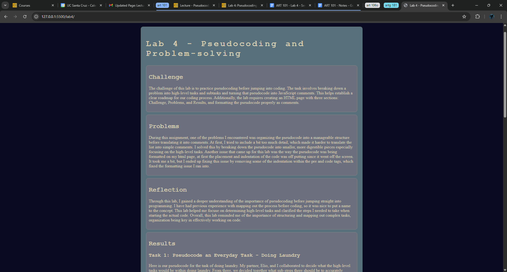
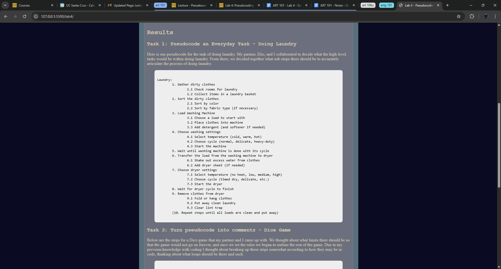
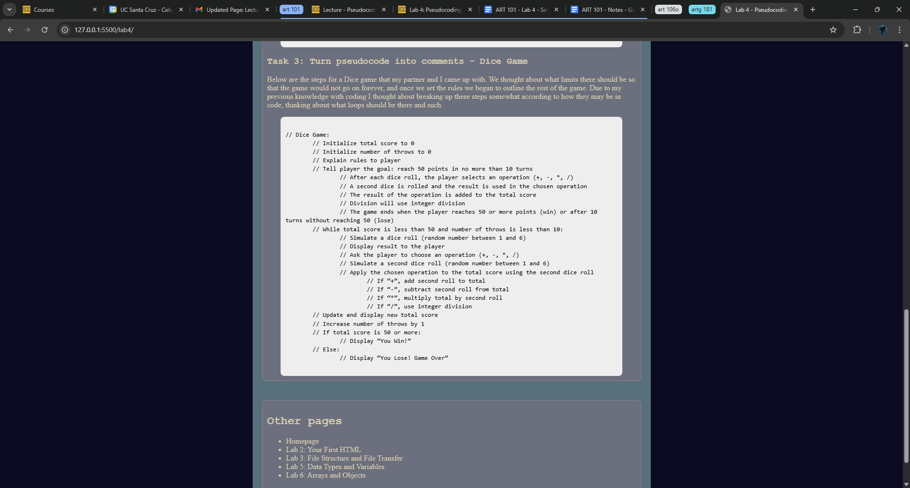

Lab 4 - Pseudocoding and Problem-solving
Challenge
The challenge of this lab is to practice pseudocoding before jumping into coding. The task involves breaking down a problem into high-level tasks and subtasks and turning that pseudocode into JavaScript comments. This helps establish a clear roadmap for our coding process. Additionally, the lab requires creating an HTML page with three sections: Challenge, Problems, and Results, and formatting the pseudocode properly as comments.
Problems
During this assignment, one of the problems I encountered was organizing the pseudocode into a manageable structure before translating it into comments. At first, I tried to include a bit too much detail, which made it harder to translate the list into simple comments. I solved this by breaking down the pseudocode into smaller, more digestible pieces especially focusing on the high-level tasks. Another issue that came up for this lab was the way the pseudocode was being formatted on my html page, at first the placement and indentation of the code was off putting since it went off the screen. It took me a bit, but I ended up fixing this issue by removing some of the indentation within the pre and code tags, which fixed the formatting issue I ran into.
Reflection
Through this lab, I gained a deeper understanding of the importance of pseudocoding before jumping straight into programming. I have had previous experience with mapping out the process before coding, so it was nice to put a name to the concept. This lab helped me focuse on determining high-level tasks and clarified the steps I needed to take when starting the actual code. Overall, this lab reminded me of the importance of structuring and mapping out complex tasks, organization being key in effectively working on code.
Results
Task 1: Pseudocode an Everyday Task - Doing Laundry
Here is our pseudocode for the task of doing laundry. My partner, Elio, and I collaborated to decide what the high-level tasks would be within doing laundry. From there, we decided together what sub-steps there should be to accurately articulate the process of doing laundry.
Laundry:
1. Gather dirty clothes
1.1 Check rooms for laundry
1.2 Collect items in a laundry basket
2. Sort the dirty clothes
2.1 Sort by color
2.2 Sort by fabric type (if necessary)
3. Load Washing Machine
3.1 Choose a load to start with
3.2 Place clothes into machine
3.3 Add detergent (and softener if needed)
4. Choose washing settings
4.1 Select temperature (cold, warm, hot)
4.2 Choose cycle (normal, delicate, heavy-duty)
4.3 Start the machine
5. Wait until washing machine is done with its cycle
6. Transfer the load from the washing machine to dryer
6.1 Shake out excess water from clothes
6.2 Add dryer sheet (if needed)
7. Choose dryer settings
7.1 Select temperature (no heat, low, medium, high)
7.2 Choose cycle (timed dry, delicate, etc.)
7.3 Start the dryer
8. Wait for dryer cycle to finish
9. Remove clothes from dryer
9.1 Fold or hang clothes
9.2 Put away clean laundry
9.3 Clear lint trap
(10. Repeat steps until all loads are clean and put away)
Task 3: Turn pseudocode into comments - Dice Game
Below are the steps for a Dice game that my partner and I came up with. We thought about what limits there should be so that the game would not go on forever, and once we set the rules we began to outline the rest of the game. Due to my previous knowledge with coding I thought about breaking up these steps somewhat according to how they may be in code, thinking about what loops should be there and such.
// Dice Game:
// Initialize total score to 0
// Initialize number of throws to 0
// Explain rules to player
// Tell player the goal: reach 50 points in no more than 10 turns
// After each dice roll, the player selects an operation (+, -, *, /)
// A second dice is rolled and the result is used in the chosen operation
// The result of the operation is added to the total score
// Division will use integer division
// The game ends when the player reaches 50 or more points (win) or after 10 turns without reaching 50 (lose)
// While total score is less than 50 and number of throws is less than 10:
// Simulate a dice roll (random number between 1 and 6)
// Display result to the player
// Ask the player to choose an operation (+, -, *, /)
// Simulate a second dice roll (random number between 1 and 6)
// Apply the chosen operation to the total score using the second dice roll
// If “+”, add second roll to total
// If “-”, subtract second roll from total
// If “*”, multiply total by second roll
// If “/”, use integer division
// Update and display new total score
// Increase number of throws by 1
// If total score is 50 or more:
// Display “You Win!”
// Else:
// Display “You Lose! Game Over”
Task 4: Create an index.html for Lab 4
Shown below are some screenshots of my Lab 4 HTML page within a live server*. (*Note: Final Published screenshot would be included on the Lab 4 PDF)
  